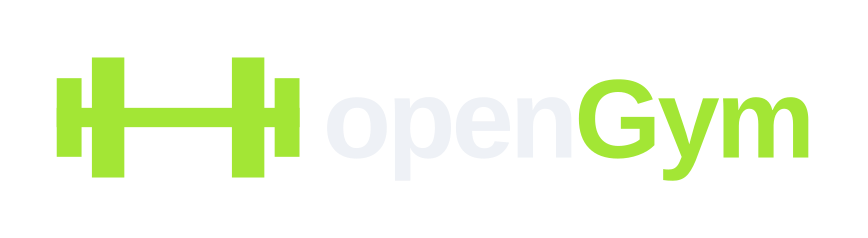
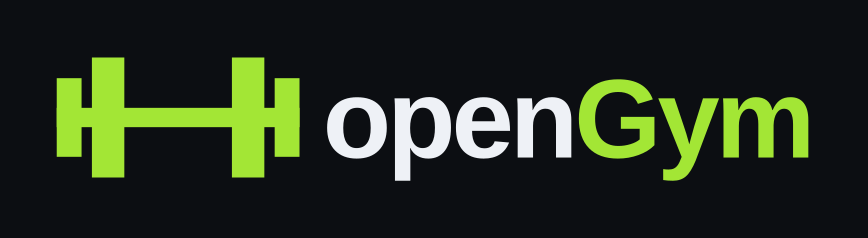
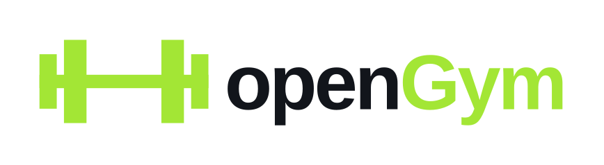
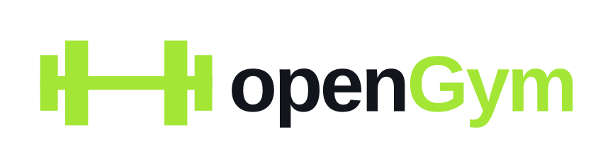
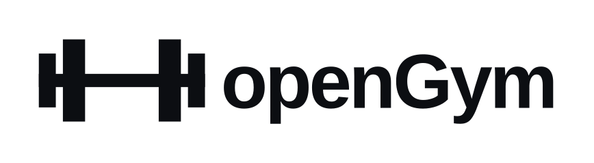
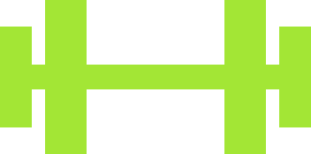
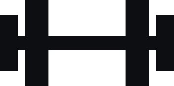

openGym Brand
Brand guidelines
How openGym looks, sounds and behaves: the logo, colour, type, the app icon and the voice. Use this page when you write about openGym, build something for it or contribute to it. Every file is here to download.

Logo
The logo is the barbell mark and the word openGym, side by side. It is the signature of the project and appears once on each surface.
Use the official files. The letters in the files are outlines, so the logo looks the same on every computer. Never retype it, redraw it or rebuild it from parts.
Keep the two colours. "open" takes the text colour of the background, "Gym" is always openGym green. On green and on single-colour backgrounds, use the all-black or all-white version.
Spell it openGym. Lower-case o, capital G, one word, also at the start of a sentence.
Use the mark alone where there is no room for the word. App icons, watch faces, notifications, favicons and avatars use the mark by itself.
Construction
The mark is drawn on a 352 × 174 grid from five plain rectangles: one bar and four plates, centred on the bar, with square corners.
| Element | Width | Height | Notes |
|---|---|---|---|
| Bar | 352 | 28 | Full width, centred vertically |
| Outer plates | 36 | 114 | At 0 and 316 |
| Inner plates | 47 | 174 | At 51 and 254 |
| Mark in the logo | 1.07 × type size | 0.2 × type size from the word; centre 0.36 × type size above the baseline | |
| Wordmark | Liberation Sans Bold | Weight 700, letter spacing -0.036 em, outlined in every file | |
Clear space and minimum size
Leave half the height of the mark free on every side. No text, picture or edge goes inside it; the official files already include this space.

| Element | Screen | |
|---|---|---|
| Logo | 120 px wide | 30 mm wide |
| Mark alone | 16 px wide | 6 mm wide |
| App icon | 29 px | 8 mm |
Versions
Choose the version by the background. Try it: pick a background and the right file appears.























Misuse
These changes break the logo, at every size and in every version.
Colour
One green, lots of dark. openGym green carries the brand; everything else is ink, light and grey, so the green always means something.
Use green as a signal. Buttons, the active state, a record, the word Gym. If everything is green, nothing is. Roughly 70 % ink, 20 % light and grey, 10 % green.
Put ink on green, never white. Text on a green button is #0C0E12. White on openGym green is only 1.5 : 1.
Use the darker green for text on light. On white and light grey, green words and links are #4D7C0F. The bright green stays for shapes there.
Let people choose their own accent in the app. New installs start with openGym green. The logo, the app icon and every brand surface stay openGym green whatever the user picks.
Specifications
| Name | HEX | RGB | CMYK | Use |
|---|---|---|---|---|
| openGym green | #A3E635 | 163 230 53 | C35 M0 Y90 K0 | Buttons, highlights, the word Gym |
| Ink | #0C0E12 | 12 14 18 | C60 M40 Y40 K100 | Backgrounds, text on green |
| Light | #EEF1F6 | 238 241 246 | C4 M2 Y0 K2 | Text on dark, light surfaces |
| Dark text | #12151B | 18 21 27 | C70 M55 Y40 K90 | Text on light |
| Green on light | #4D7C0F | 77 124 15 | C70 M20 Y100 K35 | Green text and links on white |
| Surface | #1B1F26 | 27 31 38 | C75 M60 Y45 K75 | Panels on ink |
| Muted | #8B919C | 139 145 156 | C45 M35 Y28 K5 | Captions on dark |
CMYK values are starting points for coated paper; openGym green lies outside CMYK and prints slightly duller, so always ask for a proof. Also as CSS variables and JSON.
Contrast
Every text pair meets WCAG 2.2 AA.
| Text | Background | Ratio | Level |
|---|---|---|---|
| Light #EEF1F6 | Ink | 17.1 : 1 | AAA |
| openGym green | Ink | 12.8 : 1 | AAA |
| Ink | openGym green | 12.8 : 1 | AAA |
| Muted #8B919C | Ink | 6.1 : 1 | AA |
| Dark text #12151B | White | 18.3 : 1 | AAA |
| Green on light #4D7C0F | White | 5.0 : 1 | AA |
| openGym green | White | 1.5 : 1 | Shapes only |
Typography
Big numbers, short words. The logo has its own typeface; everything else uses the platform's font, so the app feels native and loads nothing extra.
Never type the logo. The wordmark is Liberation Sans Bold, outlined in the files. Use the files.
Use the system font. SF Pro on Apple devices, Roboto on Android and Wear OS, Segoe UI on Windows. Inter for documents, Roboto for graphics.
Make numbers steady. Tabular figures for weights, reps and timers, so they don’t jump while they change.
Write in sentence case. No all-caps headlines. Left-aligned text, at most one centred moment per screen.
| Style | App | Website | Weight | Tracking |
|---|---|---|---|---|
| Display | 34–48 pt | 52–132 px | Bold | -0.045 em |
| Heading | 22–28 pt | 32–60 px | Bold | -0.03 em |
| Lead | 17–19 pt | 18–21 px | Regular, Semibold | 0 |
| Body | 15–17 pt | 16–17 px | Regular | 0 |
| Small | 12–13 pt | 13–14 px | Regular, Semibold | 0 |
App icon
The mark in openGym green on ink, centred, with nothing else. The master is square; the stores and phones round the corners themselves.


| Platform | Format | Notes |
|---|---|---|
| iPhone | 1024 × 1024, opaque | Nine alternate icons in the app are the user's choice |
| Android | Adaptive icon, monochrome layer | The mark sits inside the 66 dp safe zone |
| Apple Watch, Wear OS | Round | Mark in brand green on ink |
| Garmin | 70 × 70, scaled per watch | Drawn pixel-exact from the mark |
| Notifications | White mark on clear | The system tints it |
| Web | favicon 48, PNG 96 to 512 | apple-touch-icon is the 180 px square |
Imagery
The real app, real exercises, real gyms.
Show the real app with real data. Real exercise names, believable weights, a plan that adds up. Dark mode first, no fake hands or 3D tilts.
Photograph training, not bodies. Real gyms, real equipment, natural light. No stock smiles, posed models or before-and-after pictures.
Voice and tone
Talk like a good training partner: direct, encouraging, a little witty.
Be human. Short sentences, plain words, "you" and "we".
Be honest. Say what it does. No "revolutionary", no fake urgency, no shaming a missed day.
Keep the mechanics. openGym, always. No em dashes in app texts, store texts or posts. Digits for weights and reps, in the user's unit.
Banners
Ready-made for the usual places, with a real screen from the app.


Using the brand
Free to use when you write about openGym, link to it or build something for it.
| You may | Please don't |
|---|---|
| Use the logo and banners in articles, videos, talks and reviews | Make it look like openGym made, sponsors or endorses your product |
| Say "works with openGym" for an integration | Use the name or mark in your product's name, icon or domain |
| Fork the code under the AGPL-3.0 | Ship a fork under the openGym name; give it its own |
The source code is AGPL-3.0; the name and logo are not part of the code licence and are used as described here. Questions: contact@duarte-santos.ch or Discord. When in doubt, ask. The answer is usually yes.
Change log
| Date | Change |
|---|---|
| 9 November 2026 | First edition: one green for logo and interface, outlined wordmark files, design principles, voice, banners. |